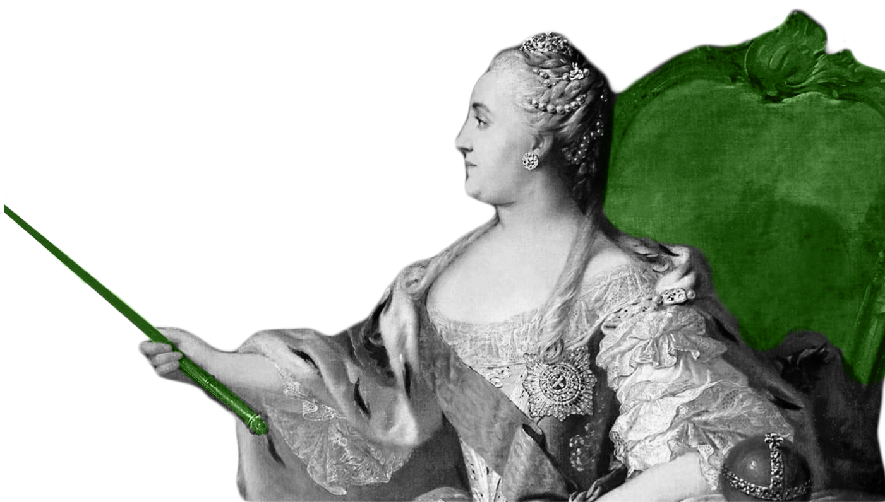

Нейминг
Профориентация
Ориентировать
Компас
Compas
Информационный сервис, помогающий абитуриентами при поступлении. Для бренда важно обеспечить клиентам удобный и стильный интерфейс, не перегружая его изобилием информации.
Помочь людям найти свое занятие по душе, не позволяя утонуть в море информации.
Главной метафорой выступает изображение известных личностей, внесших вклад в развитие наук, в качестве преподавателей. Вспомогательными элементами выступают школьные атрибуты. Например, в виде школьной доски.
Профориентация
Ориентировать
Компас
Compas
Компас является олицетворением сути нашего проекта. Мы также помогаем абитуриентам ориентироваться. Только не в пространстве, а в принятии решений о поступлении.
Raleway is an elegant sans-serif typeface family. Initially designed by Matt McInerney as a single thin weight, it was expanded into a 9 weight family by Pablo Impallari and Rodrigo Fuenzalida in 2012 and iKerned by Igino Marini. A thorough review and italic was added in 2016.
Raleway — это элегантное семейство шрифтов без засечек. Первоначально разработанный Мэттом Макинерни как один тонкий груз, он был расширен до семейства из 9 весов Пабло Импаллари и Родриго Фуэнзалида в 2012 году и iKerned Иджино Марини. Тщательный обзор и курсив были добавлены в 2016 году.
Нам было важно выбрать нейтральные цвета в виде черного и белого, как основу фирменного стиля, но и использовать неоново-зеленый и розовый, чтобы придать проекту яркости и эффектности.
Двенадцатиколонник для горизонтальных носителей и шестиколонник для вертикальных.
Важной составляющей графики являются исторические лица, представленные в черно-белом цвете. Они выступают в роли преподавателей, в плакатах они представлены в своих школьных кабинетах.
Текст-заполнитель — это текст, который имеет некоторые характеристики реального письменного текста, но является случайным набором слов или сгенерирован иным образом. Его можно использовать для отображения образца шрифтов, создания текста для тестирования или обхода спам-фильтра.